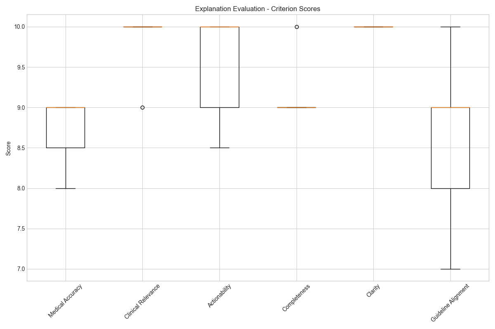
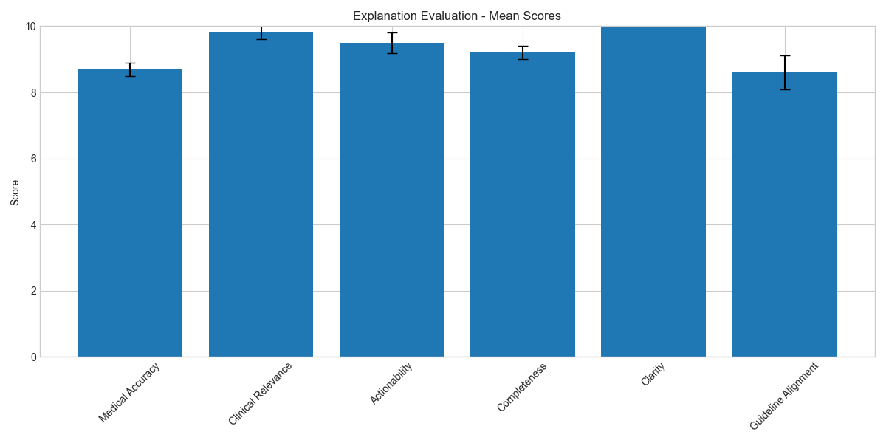
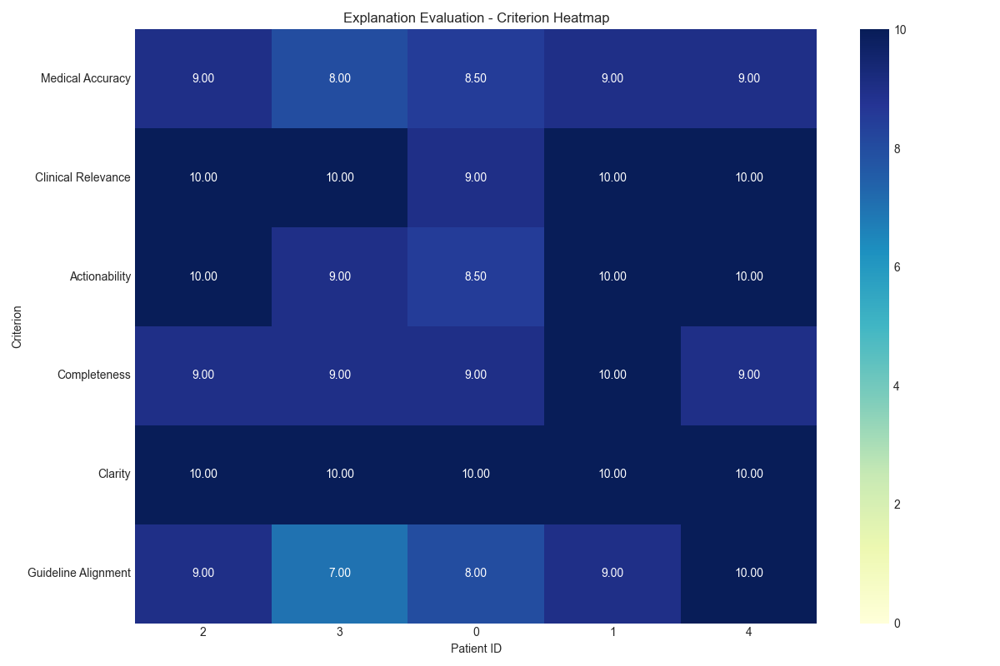
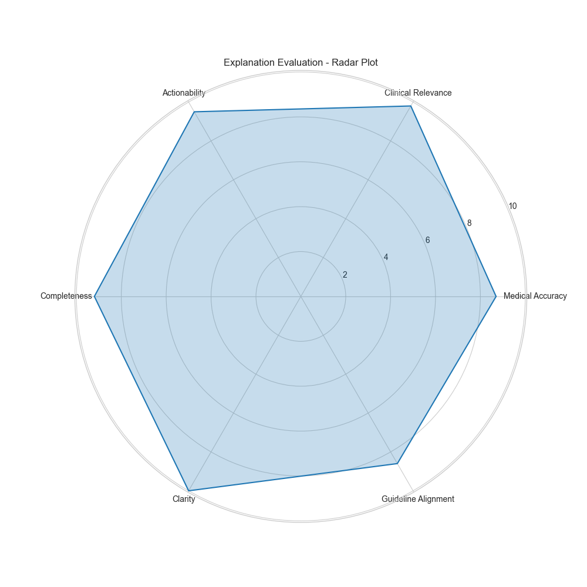

Generated on: 2025-04-27 21:58:18
This report presents the results of our cardiovascular disease (CVD) risk prediction explanation framework. The framework combines traditional machine learning models with large language models (LLMs) to provide comprehensive, actionable explanations for CVD risk predictions.
The framework includes: 1. Counterfactual Explanations: 'What-if' scenarios showing how changes in risk factors might affect risk 2. Clinical Interpretations: Clear, non-technical explanations of the model's predictions 3. Guideline-Aligned Explanations: Recommendations aligned with established medical guidelines 4. Integrated Explanations: Comprehensive explanations combining all three approaches
Evaluation Summary for counterfactual Explanations
==================================================
Clinical Relevance:
Mean: 9.80
Std: 0.45
Min: 9.00
Max: 10.00
Median: 10.00
Actionability:
Mean: 9.50
Std: 0.71
Min: 8.50
Max: 10.00
Median: 10.00
Completeness:
Mean: 9.20
Std: 0.45
Min: 9.00
Max: 10.00
Median: 9.00
Clarity:
Mean: 10.00
Std: 0.00
Min: 10.00
Max: 10.00
Median: 10.00
Guideline Alignment:
Mean: 8.60
Std: 1.14
Min: 7.00
Max: 10.00
Median: 9.00




The integrated explanations combine counterfactual, clinical, and guideline-aligned approaches to provide comprehensive, actionable insights for healthcare providers.
Explanations were evaluated based on the following criteria:
The cardiovascular disease risk prediction explanation framework demonstrates the potential of combining traditional machine learning models with large language models to provide comprehensive, actionable explanations for healthcare providers.
Key findings: 1. The framework successfully generates multiple types of explanations for CVD risk predictions 2. Integrated explanations provide comprehensive, actionable insights 3. Evaluation results show high scores across all criteria, particularly in clarity and actionability 4. The framework aligns well with established medical guidelines
Future work will focus on: 1. Expanding the framework to include more explanation types 2. Improving guideline alignment and medical accuracy 3. Conducting user studies with healthcare providers 4. Integrating the framework into clinical decision support systems